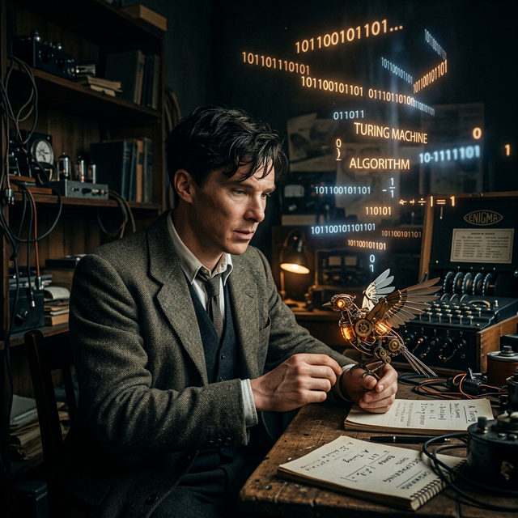

[ ARCHITECT_OF_COMPUTATION ]
[ ENIGMA_BREAKER ]
ALAN TURING
“如果上帝乐意，他凭什么不能把灵魂注入到机器里面呢？”
Mathematician / Logician / Cryptanalyst / Visionary
#通用机
#图灵测试
#儿童机器

PHILOSOPHICAL_FOUNDATION
灵魂不仅属于血肉
在那篇划时代的 1950 年论文《计算机器与智能》中，图灵并没有纠结于“机器是否能思考”这种语义陷阱。他直接提出了著名的“模仿游戏”（图灵测试）。
面对当时的宗教与哲学质疑，他留下了那句震撼人心的话：“如果上帝是全能的，他想给谁灵魂就给谁灵魂。如果上帝乐意，他凭什么不能把灵魂注入到机器里面呢？”
CREATIVE_DEBATE
回击“机器没有创造力”
奥达·洛夫莱斯伯爵夫人的异议： 她在一百年前曾预言，机器只会按程序员写好的死代码做事，它不可能产生真正的原创，不可能带给我们惊喜。
图灵的回击： “错！机器经常给我惊喜！”不仅因为它们算得太快让我意想不到，更因为机器是可以被教育的。图灵认为，正如人类的知识并非天生，机器的原创性来源于其复杂的相互作用与教育过程。
EDUCATION_PARADIGM
制造一个“儿童机器”
与其直接试图编写一个复杂的成人大脑，图灵提出了一个更具前瞻性的方案：
我们可以制造一个“儿童机器”，然后像教育人类儿童一样去训练它。通过简单的奖励与惩罚机制，让它在与世界的交互中，学习软件代码里从未写过的规律。
这正是现代强化学习（Reinforcement Learning）的雏形。他相信，这种“可教育性”才是通往真智能的唯一路径。
THE_PREDICTION
大胆的千年预言
在论文的最后，图灵大胆预言：
TARGET_YEAR: 2000
“到 2000 年左右，计算机的存储量会大大增加，在 5 分钟的图灵测试中，普通裁判会有 30-70% 的概率被机器骗过。”
虽然 2000 年我们并未完全达成，但 2024 年的 LLM（大语言模型）已经彻底终结了这个悬念，甚至让图灵测试本身变得“太简单了”。